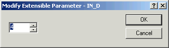
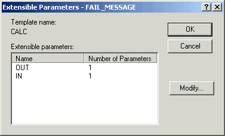
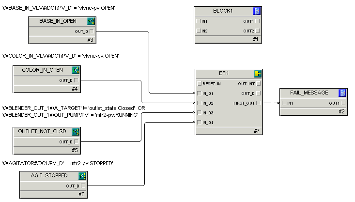

Create the failure monitor logic
- Open the AGITATE phase class in Control Studio.
- Double-click the Fail_Monitor to open it. It opens with one CALC block, named BLOCK1.
- Add four Condition blocks, one Boolean Fan In block, and one Calc/Logic block to the diagram, as shown in the previous topic. (Look on the Logical and Analog Control palettes for these items.)
- Rename the blocks as shown on the diagram. You can remove the display of the block template names by clicking click Diagram Preferences on the Diagram tab in the Layout group. Then, clear the Template Names check box.
-
To change the number of inputs to the BFI1 block, select the block, select Extensible Parameters from the context menu, and change the number of connectors to 4.

Tip:If you would like more detailed information about the BFI block, click the Books Online icon.
-
To change the number of outputs and inputs on the FAIL_MESSAGE block to 1 each, select Extensible Parameters from the context menu, double-click the OUT (then the IN parameter), and change the number of connectors to 1.)

-
Connect the blocks as shown in the following figure.

- For each condition block, select Expression from the context menu and modify the expression to check for the failure conditions. (We have shown the expressions on the diagram as a configuration aid.)
- Set the DISABLE parameter for each condition block equal to 1. This initially disables the conditions so that the expressions are not monitored. During execution of the phase, we will selectively enable any condition that we want to monitor. To disable a condition, display all parameters in the Parameter View by selecting all the filters (all boxes selected). Click one of the Condition blocks (for example, BASE_IN_OPEN). Double-click the Disable parameter and change the value to 1. Continue for all the Condition blocks.
-
Create the following expression for the FAIL_MESSAGE calculation block:
FAIL_MOD := IN1; OUT1 := 0; IF (FAIL_MOD = 1) THEN OUT1 := 'phase_failures:Inlet Valve Open'; ELSE IF (FAIL_MOD = 2) THEN OUT1 := 'phase_failures:Inlet Valve Open'; ELSE IF (FAIL_MOD = 4) THEN OUT1 := 'phase_failures:Outlet Not Closed'; ELSE IF (FAIL_MOD = 8) THEN OUT1 := 'phase_failures:Agitator Stopped'; ENDIF; ENDIF; ENDIF; ENDIFThis expression determines which failure message should be displayed to the operator based on the first failure condition that was detected by the Boolean Fan In block. The failure message will later be written to the phase's FAIL_INDEX parameter.